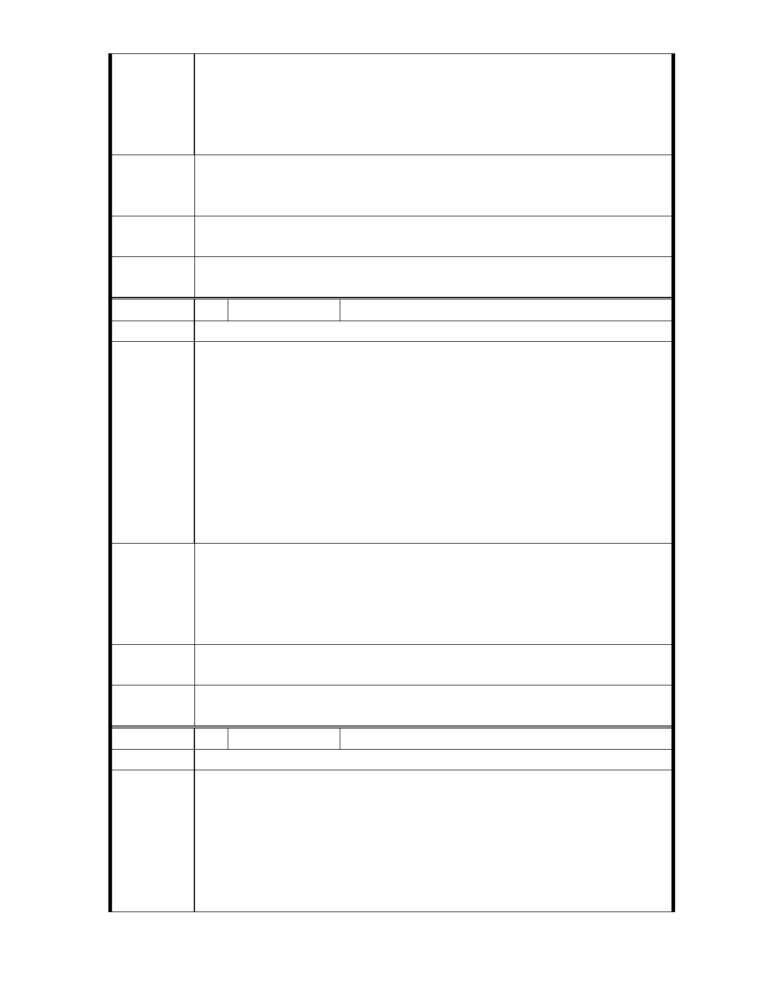

雙溪河由至善國中段至自強隧道區間之左岸，規劃得美輪美奐、
景色優美，反觀右岸時，道路兩側雜草叢生，該地段經市府多年
陳 情 理 由 規劃為公園，我們已經居住在這裡幾十年了，市府還是規劃為公
園及河川區，對右岸的所有權人非常不公平，應將該地段變更為
低密度開發才能使該地區更加繁榮。
右岸居民數甲子居住於現址內，對於右岸居民現址坐落區域內，
建 議 辦 法 將該地段變更為低密度開發，輔導並融入雙溪地區人文與藝術規
劃。
專
結
案
小
組
論
建議納入「臺北市士林區都市計畫通盤檢討（主要計畫）案」內。
委
決
員
會
議
依專案小組結論辦理。
編 號 39 陳情人 魏隆定
建 議 位 置 雙溪左岸婆婆橋至自強橋段
雙溪都市計畫中雙溪公園由至外雙溪橋河岸邊左邊，規劃的美輪
美奐、故宮附近景色優美，唯美中不足又破壞故宮優美景觀視野
的建物，就是故宮正前方之大樓建築物，地圖中故宮河岸右邊發
展除部分區域農民耕作外，又為顧及行人和車輛安全，住戶得自
陳情理由
行維護道路兩側景觀以利行車安全，亦未見市府相關單位維護道
路及市容景觀，河岸左右兩側發展差別其大，市府 59 年規劃河岸
右側為公園至今已 40 多年，亦不徵收用地、也無其他規劃及配套
措施方案，用意令市民大眾猜疑，我們已經居住在這裡幾十年了
，市府還是規劃為公園及河川區對我們所有權人實在非常不公平
，應該將該區域範圍變更為低密度開發才能使該地區更加繁榮。
1. 將河右岸區域地段變更為低密度開發區。
2. 規劃整治雙溪河應由上游開始整治河川，勿一昧的由下游清
建 議 辦 法 淤，上游整治後，再執行中下游清淤作業必能事半功倍，並融
入馬總統大力推行之腳踏車專用道及沿河步道相信更能發揚雙
溪人文地理特色。
專
結
案
小
組
論
建議納入「臺北市士林區都市計畫通盤檢討（主要計畫）案」內。
委
決
員
會
議
依專案小組結論辦理。
編 號 40 陳情人 賴同祥等 6 人
建 議 位 置 士林區翠山段二小段（至善路二段 266 巷 64、66 號）
1. 土地所有權人依法取得地號 517 等 94 筆之土地地籍圖。
2. 該等土地被臺北市政府於民國 59 年 7 月 4 日府工二字第 29248
號公告「陽明山管理局主要計畫案」內，即規劃為：「公園用地
陳 情 理 由 」。註：到 100 年 3 月止，被規劃「已超過 40 年」。
3. 該等大片土地百年來，從未有「洪水災害」發生。
4. 該等土地內，被繼承人死亡時，繼承人必須依法繳納巨額之遺
產稅，才能依法取得繼承權。
- 50 -